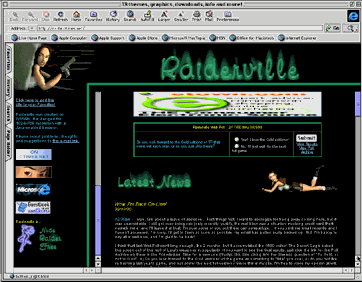

Female-Bobs arrive at Dusk
"And why this patch? I was dissatisfied with the various bimboish female-Bob patches, as being inappropriately dressed, and I wanted to create a patch of that type that was non-bimboish and in the style of the original Bobs."
-Loren Petrich, (1996)from the Read-me, Sex-changer file for his Tina-bob patch for the Marathon Infinity game engine. [1]
3D shooter and adventure computer games have evolved since the mid 1990’s and game fans and hackers are no longer called upon to patch female game heroines into what were once almost exclusively male populated game worlds. It is quite possible that these early fan created female heroine patches patterned the genotype for later heroines in commercial games.[2] In 1996, Eidos Interactive's lucrative release of Tomb Raider with action heroine "Lara Croft" was followed by a stream of commercial 3D shooters with at least the option of playing active female avatars. PC and console games like Resident Evil (1997), Vigilance (1998), O.D.T. (1998 ) and Dark Vengeance (1998), allow the player to choose female characters from a cast of genders and ethnicity’s, (similar to the array of character profiles available in console fighting games like Mortal Combat).[3] Sega’s 1998 release of the space shooter Enemy Zero features a solo action heroine with familiar first name, "Laura Lewis".
Yet this millennial infusion of female polygonal heroines into the shoot-em up computer game world was not accompanied by a parallel influx of human female players. (Other genres of computer games follow different gender subject configurations, for instance, online role playing games have historically been more popular with women in comparison to shooter games.) With the notable exception of recent formations of female Quake clans like Vicious Vixens and Clan PMS, the 3D shooter world is still largely inhabited by human males who control virtual male and/or female avatars.[4] The pairing of human men/boys with virtual women avatars, a configuration that one may speculate is sometimes one of the few relationships that these teenage and twenty something computer gamers have to "women", generates some puzzles for us to explore.
Why have some of these guys traded in their soldiers for macho girl dolls? Do they identify with the heroines as players in drag? Are these virtual women dangerously idealized porno dolls or substitute girlfriends for geeks? What are we to make of "Croftage", the term I overheard one gamer, standing nearby at a Los Angeles outlet of Fry’s Electronics, use to describe the massive celebrity worship of Tomb Raider heroine, Lara Croft, who will star in a major motion picture produced by Paramount? And how to approach these male constructed female avatars as a female player?
Let's return to Loren Petrich’s Tina-bob Patch cited at the beginning of the text. In online gamer fan culture the practice of creating game add-ons, patches, hacks, skins, levels, mods and all manner of game modifications allows for game "fans" to actively participate in the cultural production of gaming.[5] Game patching goes beyond Henry Jenkins description of the "de Certeauian" processes of "nomadic textual poaching" practiced by avid television fans to material rearticulation and hacking of game worlds and avatars, all available for free download from game fan sites.[6] As a kind of open source laboratory for gaming, online patch distribution is a forum for proposing new and alternative character types and player subject positions, occasioning mutations at the borders of "official" game genres.
Loren’s Tina-bob Patch replaces 1st person shooter Marathon Infinity's male "Bob" protagonist with a "non-bimbo" Tina. The patch's read-me file describes Loren's feminist rational for his creation Tina’s (was almost named Mary) discreet body proportions and unisex attire. Tina-bob was fabricated as an alternative to patches like J. Coffey’s Amazons and Female Robertas Infinity patch. Amazons and Female Robertas populates the game world with topless double-D Amazons and florescent bikini poster girls (the Robertas). [7] In a cultural domain where comic book extremes, excess and monstrosity, are rampant, unostentatiously efficient Tina-bob in her military green full body uniform arrives to save the day, refusing to participate in a spectacle of radical otherness, or to submit to adolescent male fantasies of female sexiness. She is truly a female version of Bob, the unsupposing everyman male protagonist of the Marathon Series whose nondescript character is intended to allow the player to slip seamlessly into his skin. (Although, as the existence of this and other female bob patches suggest, a white male bob skin is not necessarily what white male gamers feel like wearing every day.)
Picture 1. Tina-bob patch by Loren Petrich
As game engine graphics, hardware processing power, and 3D accelerator cards improve, allowing for increased visual detail and special effects like fog and lighting, game genres experience content and game play "evolutionary" transformations as well. Skipping forward on a highly accelerated shooter genre evolutionary timeline to the year 2000, neither the androgynous Tina-bob, the bare breasted Amazon, nor the sleazy poster girl, have emerged as the female genotype de jour in the online Quake Arenas. Or perhaps it is more accurate to say the Frag Queens of network shooters like Quake and Unreal mix and match female character lexical genes from all of these heroines into a new kind of a Tina-bob monster, splicing pumped up musculature onto large breasts and androgynous combat wear.[8]
Jumping back once again to the crucial stage of gender mapping in computer games at the close of the millennium, a similar debate with feminist and ethical overtones is inscribed in the topology of online Tomb Raider fan culture. Male gamers were once again contesting what sorts of female avatar representation are appropriate in 3D gaming. Many Tomb Raider fans belong to the Nude Raider web ring. A ring is a collection of personal web sites that share a common theme and link to one another in a circular hyperlink pattern. The Nude Raider patch, an extremely popular game patch internationally cerca 1997, features Lara nude. Nude Raider fan sites such as Naturally Lara often feature screen shots of Lara in naked game play action. In response to the pornographization of their beloved Lara, more upstanding Tomb Raider fans, including many fans in the Tomb Raider Ring, have taken to posting "Nude Raider free" banners on their sites. These fans affect a more romantic stance towards Lara, (although I don’t think they object to her comic book heroine figure judging by how often they post Lara pictures on their sites).

Picture 2. A Lara Croft fan site with a "Nude Raider Free" banner displayed in the bottom left frame. [9]
Fan web sites such as The Croft Times elevate Lara to celebrity status, spinning elaborate tales of Lara’s personal and extra-cirricular (outside the game) life.[10] Fan fiction distributed through zines and club publications is common among fans of television series like Star Trek and Beauty and the Beast. According to Henry Jenkins, this particular television fan culture is comprised mostly of women, and he reads the stereotype of brainwashed obsessive fans as a reification of mainstream culture's misogynist values.[11] Interestingly, but not too surprising considering the gender composition of the majority of gamers, computer game fan fiction is usually "penned" by male writers. Writers such as Michael L. Emery, author of The Flowers of God, and Marc Farrimond, author of Wedding Bells, post their stories on the Croft Times and other fan fiction sites.[12] Although the heroine worship of digital character Lara Croft is a more recent phenomenon, game fan fiction is also very common in the role playing game genre, where players publish extensive histories of the fantastic exploits of their guild or clan on their own guild or clan dedicated sites.
Lara Croft’s hyperreal virtual girlfriend role is encouraged by Eidos Interactive’s clever introduction to the game. The player uses Lara’s personal mansion as a training course for subsequent game play and can also enter into any of her private rooms, including bedroom, bathroom and a cavernous oversized kitchen. After completing the training course with Lara’s watchful pleasantly British voice as guidance, the player feels as if he has personally made her acquaintance (and he can return to visit her home anytime he wants to). By allowing the player access to Lara's domestic sphere, in addition to "accompanying her" on her adventures to Egyptian tombs and exotic cities, the player is granted special privileges normally reserved for family, friends and lovers.
Lara Croft's most obvious virtual female competitor in the East was Japanese pop star Kyoko Date. Kyoko's popularity has waned dramatically and unfortunately her existence has almost been entirely erased from the web, leaving a trail of dead links in her wake. Created in 1996, Kyoko is a 3D female character who released pop songs, music videos, and generated extra income as spokeswoman for San Francisco new media company Oz Interactive. With a short boyish haircut, slender and girlish in comparison to Lara Croft, Kyoko had her own following of fan fiction and pornographic tales which borrowed from anime and manga conventions in Japan. Sometimes as "innocent" as a Sailor Moon high school romance, Kyoko's fan fiction occasionally dipped into Japanese style erotica. Kyoko fan Dire Wolf describes how, "on the Internet, teenage boys from Italy, Hong Kong, Malaysia, and around the world were flooding Kyoko Date bulletin boards with postings and scouring the web for graphics of her beauty."
Picture 3. Kyoko Date, Virtual Singer of Japanese hit pop song Love Connection[13]
The portrait of the lonely male computer gamer longing for either a romanticized virtual girlfriend or an objectified virtual porn star in the form of a computer game heroine relies on the heterosexist assumption that boys would naturally represent themselves virtually as boys unless some stunted desire for women compelled them to create female avatars. A conceivable alternate scenario unfolds if we consider that unlike the trophy princess who awaits rescue at the end of "Prince of Persia" or the blond "bimbos" in Sim-Copter, female action heroines are active avatars in the game space that are "worn" by the player. Like early text based Mud's or more recent graphical Role Playing Games where male players often assume female identities, (and female players assume male identities), playing a female character allows male players to escape the parameters of the male game hero role and experiment with femininity.
Julian Dibbell ethnographic journeys into the textual MOO, LamdaMOO, led him to the discovery that men often played female characters and engaged in "TinySex" with other male and female characters of indeterminate RL(Real Life) gender. He describes the "gauzy" sensation of wearing a feminine skin as "enchanting", even though he had never been particularly interested in cross-dressing in the past.[13] Dibbell makes a persuasive argument for understanding the allure of online cross gender experimentations as an attraction to fantasy role play itself, or as a "taste for [...] thoroughgoing entanglement." Experienced male MOOers construct convincing female "morphs" with meticulous craft, avoiding the hollowness of "FabulousHotBabes" characters by refraining from textual description of obvious physical features and by adding punky "feminist" or "cross gender" signifiers such as gothic tattoos and combat boots. [14] Similarly, just as the sharply articulated muscular contours of the real life drag queen accent her beauty, in the 3D game world, prosthetic vestiges of the macho soldier, Lara Croft’s gun holster and oozy, Jill Valentine’s combat boots and baret and Amy Leong’s rocket launcher, thrust the gender identity of the heroine into delectable confusion.
As a woman playing a computer game heroine who is a digital drag queen I can best describe the experience as a kind of drag twice removed, or drag squared. As is sometimes the case for women who participate in various sectors of technoculture, as I enter into the masculine discourse domain of computer gaming culture I go butch, taking charge of my arsenal of weaponry and combat gear. Yet as I maneuver what is clearly a womanly form through the passageways and recesses of the game I am distinctly aware of my feminine identity. (Is there some appreciation for my avatar’s figure at this moment that I share with the Nude Raider ring or television's Warrior Princess Xena’s lesbian fan club?) My pleasure in swift and deadly annihilation of the enemy and gory blasts of pixilated blood provides an immediate, gutlevel satisfaction no longer masculine that cuts through the layers of drag, collapsing the female identity of the avatar back onto my own. Thus the double drag can be reversed on itself, allowing for women to relish in the gratuitous computer game violence while playing female avatars.
The efforts of male gamers like Loren Petrich and cohorts in shaping the Tina-bobs of the future are appreciated. Through their participation in an unofficial dialogue waged over the Internet they developed alpha and beta female heroine genotypes. Trading in their male solders for female fighters, they constructed ultra fem drag queens, level headed female soldiers, and sexy doll automatons. When the first commercial games where released with glossy female heroines, these fans further articulated various subject positions in relation to their female avatars, and constructed an online fan culture encompassing these heroines. Male gamers have initiated the process of female avatar representation and character construction but there is still an urgent need for more women to take an interest in entering the virtual world of computer gaming, both as players, active game hackers/fans, and game developers, perhaps first as drag kings. With a human female infusion, new gender configurations would arise that would strike new patterns in a world currently populated by human men with virtual men and virtual women.
Anne-Marie Schleiner
copyright 1999
End Notes: